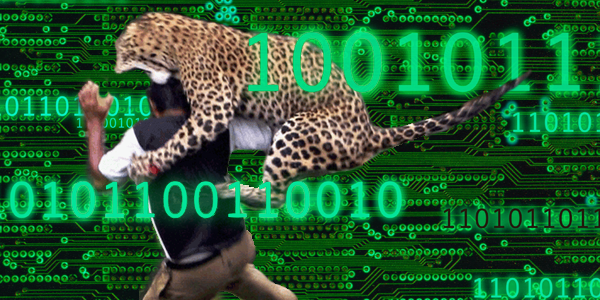

This advanced threat detection software performs a constant check in the data traffic without affecting the efficiency of the enterprise activity. Individual threats can be targeted for further investigation without the need to stop enterprises in the company. The programs generates a detailed report of the threat so it can be isolated and destroyed separately from other threats.
Features
- Privacy protection
- Universal SIEM (Security Information and Event Management) Integration
- Log analysis. It has a secure Log in system that keeps checking even after the user has log on.
- DVR-like replay. Replays any entry to the data base or any threatful event.
- Full activity capture. It records any activity done in the company, regardless of the user level.
- Role-based access controls (RBAC)
Benefits
- Provides incident replay including full event endpoint video recording and custom applications. It includes a log of all activities in a specific account.
- Reduces dependency on technical expertise due to the simplicity of the program.
- Enables safe and effective use of business and mission-critical technologies without any compatibility issues in between systems
- Measures the impact of new and existing threats and compliance in real time
- Scalable solution with highly stable agent. It does the most effective solution to any problem that might arise.
- Detects policy violations hidden by encryption, including web traffic, e-mail and attachments without slowing the velocity of the traffic.
- Promotes prompting and remediation for accidental data leak prevention preventing any identity theft or any possible leads to private data of the company.
- Monitors offline activity for mobile and deliberately disconnected users if they are suspicious of illicit activity.